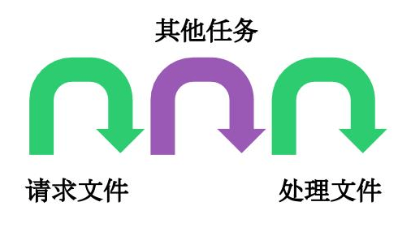

1. 异步 #
- 所谓"异步"，简单说就是一个任务分成两段，先执行第一段，然后转而执行其他任务，等做好了准备，再回过头执行第二段,比如，有一个任务是读取文件进行处理，异步的执行过程就是下面这样。

这种不连续的执行，就叫做异步。相应地，连续的执行，就叫做同步。

2.高阶函数 #
函数作为一等公民，可以作为参数和返回值
2.1 可以用于批量生成函数 #
let toString = Object.prototype.toString;
let isString = function (obj) {
return toString.call(obj) == `[object String]`;
}
let isFunction = function (obj) {
return toString.call(obj) == `[object Function]`;
}
let isType = function (type) {
return function (obj) {
return toString.call(obj) == `[object ${type}]`;
}
}
2.2 可以用于需要调用多次才执行的函数 #
let after = function(times,task){
return function(){
if(times--==1){
return task.apply(this,arguments);
}
}
}
let fn = after(3,function(){
console.log(3);});
fn();
3. 异步编程的语法目标，就是怎样让它更像同步编程,有以下几种 #
- 回调函数实现
- 事件监听
- 发布订阅
- Promise/A+ 和生成器函数
- async/await
4. 回调 #
所谓回调函数，就是把任务的第二段单独写在一个函数里面，等到重新执行这个任务的时候，就直接调用这个函数
fs.readFile('某个文件', function (err, data) {
if (err) throw err;
console.log(data);
});
这是一个错误优先的回调函数(error-first callbacks),这也是Node.js本身的特点之一。
5 回调的问题 #
5.1 异常处理 #
try{
//xxx
}catch(e){//TODO}
异步代码时try catch不再生效
let async = function(callback){
try{
setTimeout(function(){
callback();
},1000)
}catch(e){
console.log('捕获错误',e);
}
}
async(function(){
console.log(t);
});
因为这个回调函数被存放了起来，直到下一个事件环的时候才会取出,try只能捕获当前循环内的异常，对callback异步无能为力。
Node在处理异常有一个约定，将异常作为回调的第一个实参传回，如果为空表示没有出错。
async(function(err,callback){
if(err){
console.log(err);
}
});
异步方法也要遵循两个原则
- 必须在异步之后调用传入的回调函数
- 如果出错了要向回调函数传入异常供调用者判断
let async = function(callback){ try{ setTimeout(function(){ if(success) callback(null); else callback('错误'); },1000) }catch(e){ console.log('捕获错误',e); } }5.2 回调地狱 #
异步多级依赖的情况下嵌套非常深，代码难以阅读的维护let fs = require('fs'); fs.readFile('template.txt','utf8',function(err,template){ fs.readFile('data.txt','utf8',function(err,data){ console.log(template+' '+data); }) })
6. 异步流程解决方案 #
6.1 事件发布/订阅模型 #
订阅事件实现了一个事件与多个回调函数的关联
let fs = require('fs');
let EventEmitter = require('events');
let eve = new EventEmitter();
let html = {};
eve.on('ready',function(key,value){
html[key] = value;
if(Object.keys(html).length==2){
console.log(html);
}
});
function render(){
fs.readFile('template.txt','utf8',function(err,template){
eve.emit('ready','template',template);
})
fs.readFile('data.txt','utf8',function(err,data){
eve.emit('ready','data',data);
})
}
render();
6.2 哨兵变量 #
let fs = require('fs');
let after = function(times,callback){
let result = {};
return function(key,value){
result[key] = value;
if(Object.keys(result).length==times){
callback(result);
}
}
}
let done = after(2,function(result){
console.log(result);
});
function render(){
fs.readFile('template.txt','utf8',function(err,template){
done('template',template);
})
fs.readFile('data.txt','utf8',function(err,data){
done('data',data);
})
}
rende
6.3 Promise/Deferred模式 #
6.4 生成器Generators/ yield #
- 当你在执行一个函数的时候，你可以在某个点暂停函数的执行，并且做一些其他工作，然后再返回这个函数继续执行， 甚至是携带一些新的值，然后继续执行。
- 上面描述的场景正是JavaScript生成器函数所致力于解决的问题。当我们调用一个生成器函数的时候，它并不会立即执行， 而是需要我们手动的去执行迭代操作（next方法）。也就是说，你调用生成器函数，它会返回给你一个迭代器。迭代器会遍历每个中断点。
- next 方法返回值的 value 属性，是 Generator 函数向外输出数据；next 方法还可以接受参数，这是向 Generator 函数体内输入数据
6.4.1 生成器的使用 #
function* foo () {
var index = 0;
while (index < 2) {
yield index++; //暂停函数执行，并执行yield后的操作
}
}
var bar = foo(); // 返回的其实是一个迭代器
console.log(bar.next()); // { value: 0, done: false }
console.log(bar.next()); // { value: 1, done: false }
console.log(bar.next()); // { value: undefined, done: true }
6.4.2 Co #
co是一个为Node.js和浏览器打造的基于生成器的流程控制工具，借助于Promise，你可以使用更加优雅的方式编写非阻塞代码。
let fs = require('fs');
function readFile(filename) {
return new Promise(function (resolve, reject) {
fs.readFile(filename, function (err, data) {
if (err)
reject(err);
else
resolve(data);
})
})
}
function *read() {
let template = yield readFile('./template.txt');
let data = yield readFile('./data.txt');
return template + '+' + data;
}
co(read).then(function (data) {
console.log(data);
}, function (err) {
console.log(err);
});
function co(gen) {
let it = gen();
return new Promise(function (resolve, reject) {
!function next(lastVal) {
let {value, done} = it.next(lastVal);
if (done) {
resolve(value);
} else {
value.then(next, reason => reject(reason));
}
}();
});
}
6.5 Async/ await #
使用async关键字，你可以轻松地达成之前使用生成器和co函数所做到的工作
6.5.1 Async的优点 #
- 内置执行器
- 更好的语义
- 更广的适用性
let fs = require('fs');
function readFile(filename) {
return new Promise(function (resolve, reject) {
fs.readFile(filename, 'utf8', function (err, data) {
if (err)
reject(err);
else
resolve(data);
})
})
}
async function read() {
let template = await readFile('./template.txt');
let data = await readFile('./data.txt');
return template + '+' + data;
}
let result = read();
result.then(data=>console.log(data));
6.5.2 async 函数的实现 #
async 函数的实现，就是将 Generator 函数和自动执行器，包装在一个函数里。
async function read() {
let template = await readFile('./template.txt');
let data = await readFile('./data.txt');
return template + '+' + data;
}
// 等同于
function read(){
return co(function*() {
let template = yield readFile('./template.txt');
let data = yield readFile('./data.txt');
return template + '+' + data;
});
}